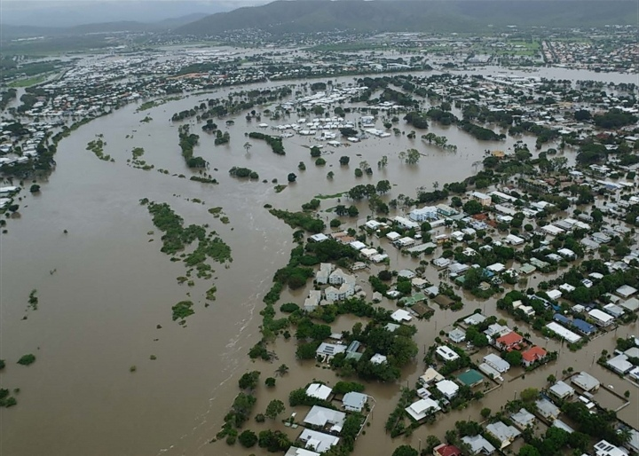

A flood is an overflow of water that submerges land that is usually dry.[1] In the sense of "flowing water", the word may also be applied to the inflow of the tide. Floods are an area of study of the discipline hydrology and are of significant concern in agriculture, civil engineering and public health. Human changes to the environment often increase the intensity and frequency of flooding, for example land use changes such as deforestation and removal of wetlands, changes in waterway course or flood controls such as with levees, and larger environmental issues such as climate change and sea level rise. In particular climate change's increased rainfall and extreme weather events increases the severity of other causes for flooding, resulting in more intense floods and increased flood risk.[2][3]
Flooding may occur as an overflow of water from water bodies, such as a river, lake, or ocean, in which the water overtops or breaks levees, resulting in some of that water escaping its usual boundaries,[4] or it may occur due to an accumulation of rainwater on saturated ground in an areal flood. While the size of a lake or other body of water will vary with seasonal changes in precipitation and snow melt, these changes in size are unlikely to be considered significant unless they flood property or drown domestic animals.